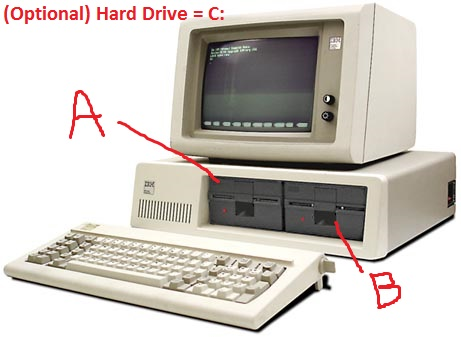

פרק 2: ניווט במערכת הקבצים של לינוקס¶
מהי מערכת קבצים?¶
מערכת קבצים היא הדרך שבה מערכת הפעלה מארגנת ומנהלת נתונים על התקן אחסון, כמו דיסק קשיח, SSD או כונן USB. היא מגדירה כיצד נקראים הקבצים, כיצד הם מאוחסנים, כיצד הם מאוחזרים ואיך הם מסודרים בדיסק.
תחשוב של זה כמו ספרייה: - הספרים הם הקבצים שלך. - המדפים ומערכת הקטלוג הם מערכת הקבצים.
היא עוקבת אחרי מיקום כל קובץ, שמו, זמן השינוי האחרון ומי יכול לגשת אליו.
לפעמים אתה בכלל לא מתעניין בקבצים ובתיקיות. פעמים אחרות זה קריטי לשימוש הנכון בתוכנית שאתה צריך.
לדוגמה, כאשר משתמשים ב‑Google Docs, אתה לא מודע לקבצים. אתה רואה רק מסמכים ותמונות, וקוד Google אחראי לחשוף לך תצוגה נוחה בלי לחשוף את מבנה הקבצים, אבל זה שם בכל זאת.
כשאתה משתמש ב‑Windows או בלינוקס, אתה חייב להיות מודע למערכת הקבצים. למשל, אם יש לך שני דיסקים (C: ו‑D:), והדיסק C: מלא, זו האחריות שלך למחוק קבצים ולהעביר אותם למקומות אחרים.
ראה את הטבלה ונחש איזו מערכת קבצים היא היותר ישנה:
| מערכת קבצים | בשימוש ע"י | גודל מקסימלי לקובץ | מספר מקסימלי של קבצים | הערות |
|---|---|---|---|---|
| NTFS | Windows | 16 TB (מעשי) | ~4.3 מיליארד | תומכת בהרשאות, הצפנה, דחיסה |
| FAT | מערכות ישנות, דיסק גמיש | 2 GB | ~65,536 (לכל כרך) | ישנה מאוד; בשימוש ב‑DOS; מיושנת לרוב השימושים |
| FAT32 | כונני USB, מערכות ישנות | 4 GB פחות בת אחד | ~268 מיליון (תיאורטי) | תואמת באופן נרחב, אך מוגבלת בגודל קובץ של 4 GB |
| exFAT | כונני USB במערכות שונות | 16 EB | ~2.7 מיליון (לכל תיקיה) | מצוינת לקבצים גדולים; חוצה פלטפורמות |
| ext4 | Linux | 16 TB (לקובץ יחיד) | 4 מיליארד | מהירה, אמינה, תומכת ב journaling |
| APFS | macOS | 8 EB | בלתי מוגבל כמעט | מודרנית, מותאמת ל‑SSD |
האם אחסון קבצים בתיקיות, יצירת עץ היררכי, הוא הדרך היחידה? התשובה הקצרה היא לא, אבל בפועל החלופות לא נפוצות.
רוב משחשבים האישיים והשרתים עדיין משתמשים במערכות קבצים היררכיות מסורתיות כמו:
- ext4, XFS, Btrfs (בלינוקס)
- NTFS (ב‑Windows)
- APFS (ב‑macOS)
מערכות אלה מהירות, בשלות, נתמכות באופן רחב ומתאימות למודל המחשבתי שמשתמשים ותוכנות מצפים לו — תיקיות, נתיבים, הרשאות.
למה החלופות אינן נפוצות כמערכות קבצים ראשיות:
- תאימות: רוב התוכנות מצפות לנתיבים כמו
/home/user/file.txt. - ציפיית המשתמש: היררכיות פשוטות ואינטואיטיביות.
- כלים ו‑APIs: רוב ממשקי ה‑OS וכלי ה‑shell (כמו ls, cd, cp) מניחים עץ תיקיות.
- ביצועים ובשלות: מערכות לא היררכיות לרוב ניסיוניות או מתאימות למקרים מצומצמים.
בשעור עתידי נעמיק בפרטים, אך לעת עתה כל מה שצריך לדעת על מערכות קבצים:
- נתונים מאוחסנים בקבצים.
- לכל קובץ יש מטא‑דטה (“נתונים על הנתונים”) כגון “מי יכול לגשת לקובץ הזה” ו-“מתי הקובץ נוצר”.
- קבצים מאוחסנים בתיקיות. ב‑Windows זה נקרא Folder. בלינוקס, directory.
משתמשים מתקדמים בלינוקס יכולים לבחור את מערכת הקבצים שמתאימה לעבודה מסוימת. לאחר הבחירה, כמעט אף פעם כבר לא משנים.
בדוק את עצמך¶
- מצא איזו מערכת קבצים בשימוש במערכת ההפעלה שלך.
- עבור מערכת הקבצים שמצאת (למשל NTFS), האם לינוקס יכולה לקרוא ממנו?
- אם התשובה היא כן, האם זה אומר שמערכת הקבצים היא “first class citizen” בלינוקס? (רמז: מה עם כתיבה/תאריך/הרשאות/ביצועים/הצפנה, snapshots)
- נניח שיש לך דיסק של 1TB עם מערכת קבצים, והדיסק כמעט מלא. האם אפשר להוסיף דיסק נוסף ולהרחיב את מערכת הקבצים כך שתשתמש בשני הדיסקים? שאל את ChatGPT.
האם זה באמת כל כך פשוט?¶
אנחנו יכולים לבלות כמה שנים בדיון על בעיות ופתרונות של מערכות קבצים. שאל את AI על זה, והתכונן לבילוי ארוך.
עץ מערכת הקבצים של לינוקס¶
בכל מערכת קבצים שתבחר, המבנה (התיקיות) נראה אותו דבר. כמעט זהה בכל הפצות לינוקס ואפילו יש לו תקן, כך שכאשר תגיע למכונת לינוקס חדשה, רוב הסיכויים שתדע היכן לחפש קבצים מסוימים.
עץ מערכת הקבצים של לינוקס מתייחס לאופן שבו קבצים ותיקיות מאורגנים במערכת לינוקס. הוא מתחיל בספריית השורש /, והכל מתפצל משם — בשונה מ‑Windows, שבו יש אותיות כונן נפרדות (C:\, D:\ וכו').
למשל, אולי יש לך 4 דיסקים וכונני רשת, הכל תחת /. זו אבסטרקציה חזקה מאוד כפי שנראה בעתיד.
שיעור היסטוריה¶
ב‑Windows, אתה קשור לכונן הפיזי המותקן. אבל יוניקס היה לפני Windows, אז למה OS מאוחר יותר פרימיטיבי יותר?
Windows לקח את זה מ‑DOS, ופספס את ההזדמנות להתבגר.
DOS לקח את זה מ‑CP/M — מערכת קטנה ש‑Bill Gates בנה עליה את DOS.
מערכת CP/M הייתה OS קטן למחשבים של שנות ה‑80 עם כונני דיסקט אחד או שניים. לא היה צורך לכתוב קוד מסובך כמו ביוניקס.
למה C:?
בהתחלה, רק עשירים יכלו להרשות לעצמם דיסק קשיח! למחשב PC היו שני כונני דיסקט שנקראו A: ו‑B:.
גם אם אין לך כונן B:, הדיסק הקשיח הראשון חייב להיות C:.
וכך בשנת 2025, כ‑35 שנים לאחר מכן, אנחנו עדיין סובלים מהבחירה ההיסטורית הזו.

מבנה עץ מערכת הקבצים הכללי בלינוקס¶
יש תקן Filesystem Hierarchy Standard ולמעשה כל ההפצות משתמשות בו. ההבדלים הם איפה בדיוק נשמרים קבצים מסוימים בתיקיות המשנה.
/
├── bin/
├── boot/
├── dev/
├── etc/
├── home/
├── lib/
├── media/
├── opt/
├── proc/
├── root/
├── run/
├── sbin/
├── sys/
├── usr/
└── var/
תיקיות עיקריות וההסבר שלהן
Directory What It Contains
/ שורש מערכת הקבצים — הכל מתחיל כאן
/bin כלי שורת פקודה חיוניים (ls, cp, rm וכו')
/sbin בינאריות מערכת — כלים למנהל (reboot, fdisk)
/etc קבצי תצורה כלליים (passwd, hosts וכו')
/home ספריות הבית של המשתמשים (/home/alice, /home/bob)
/var נתונים משתנים כמו לוגים, דואר וקבצי spool
/usr תוכניות וספריות של משתמש — אזור גדול עם /usr/bin, /usr/lib וכו
ואיך זה שונה מ‑Windows?
| Windows | Linux |
|---|---|
C:\Program Files\ |
/usr/bin/, /opt/ |
C:\Users\ |
/home/ |
| אותיות כונן (C:\, D:) | הכל תחת / |
| Registry להגדרות | קבצי תצורה בטקסט ב‑/etc/ |
לסיכום:
- הקבצים שלך נמצאים ב-/home/שם המשתמש
- אתה יכול לקרוא את רוב הקבצים במערכת
- תוכניות מאוחסנות בעיקר ב-/bin וב-/sbin
- מבנה העץ הכללי שומר על עקביות

Send feedback on
02/ch_02.he.md